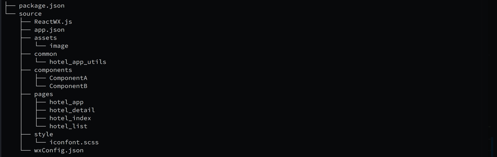
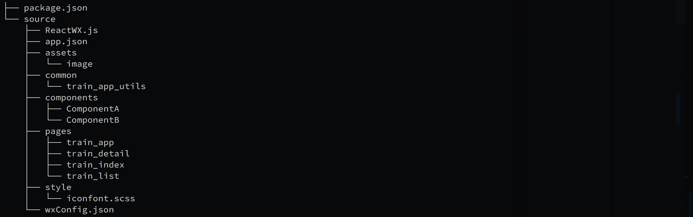
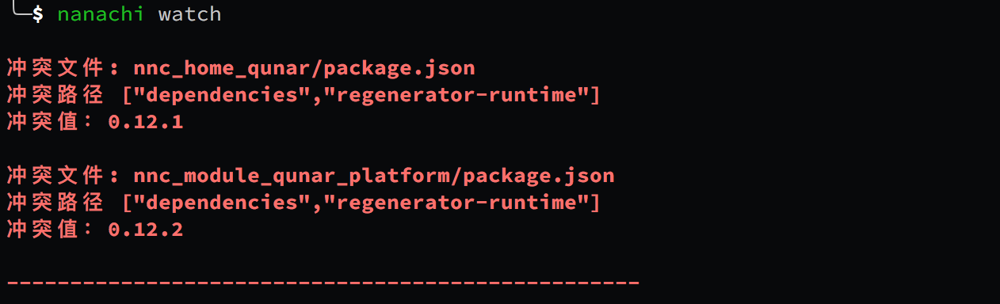

<!DOCTYPE html><html lang="zh-CN"><head><meta charSet="UTF-8"/><meta content="text/html; charset=utf-8" http-equiv="Content-Type"/><meta http-equiv="X-UA-Compatible" content="IE=edge"/><meta name="viewport" content="width=device-width, initial-scale=1, maximum-scale=1"/><meta name="apple-mobile-web-app-capable" content="yes"/><meta name="apple-mobile-web-app-status-bar-style" content="black"/><link rel="icon" type="image/png" sizes="32x32" href="../images/titleLogo.png"/><link rel="icon" type="image/png" sizes="16x16" href="../images/titleLogo.png"/><meta name="theme-color" content="#ffffff"/><meta http-equiv="Cache-Control" content="no-transform"/><meta http-equiv="Cache-Control" content="no-siteapp"/><title>拆库开发-文档</title><link rel="stylesheet" href="../ydoc/styles/style.css"/><meta name="author" content="司徒正美"/><meta name="keywords"/><meta name="description" content="使用Reac微信小程序"/><meta id="releativePath" content=".."/><link rel="stylesheet" href="../ydoc/ydoc-plugin-search/search.css"/><link rel="stylesheet" href="../style/index.css"/></head><body><div class="g-doc"><div class="m-aside"><div class="m-summary" id="js-menu"><div class="m-summary-content" id="js-menu-content"><div class="m-summary-block"><ul class="m-summary-list"><li class="item"><a href="intro.html#" class="href">介绍</a></li><li class="item"><a href="install.html" class="href">安装与使用cli各种命令</a></li><li class="item"><a href="update.html" class="href">升级</a></li><li class="item"><a href="app.html" class="href">全局对象</a></li><li class="item"><a href="lifetimes.html" class="href">页面组件与生命周期</a></li><li class="item"><a href="page2.html" class="href">页面的各个功能讲解</a></li><li class="item"><a href="component.html" class="href">页面上的子组件使用</a></li><li class="item"><a href="standard.html" class="href">小程序组件规范</a></li><li class="item"><a href="jsx.html" class="href">使用 JSX 的注意事项</a></li><li class="item"><a href="style.html" class="href">使用 CSS 的注意事项</a></li><li class="item"><a href="hooks.html" class="href">React Hooks的支持</a></li><li class="item"><a href="publish.html" class="href">目录结构与输出目录</a></li><li class="item"><a href="import_js.html" class="href">按平台打包代码或样式</a></li><li class="item"><a href="tabBar.html" class="href">据平台设置tabBar</a></li><li class="item"><a href="titleBar.html" class="href">隐藏标题栏</a></li><li class="item"><a href="redux.html" class="href">Redux/Mobx的使用</a></li><li class="item"><a href="webview.html" class="href">智能 webview 化</a></li><li class="item"><a href="customConfig.html" class="href">自定义项目配置</a></li><li class="item"><a href="customBuildConfig.html" class="href">自定义打包配置</a></li><li class="item"><a href="nativeComponents.html" class="href">不转译某些标签名</a></li><li class="item"><a href="" class="href">拆库开发</a></li><li class="item"><a href="alias.html" class="href">别名配置</a></li><li class="item"><a href="vscode.html" class="href">vscode插件</a></li><li class="item"><a href="report.html" class="href">日志收集与上传</a></li><li class="item"><a href="npm.html" class="href">npm支持</a></li><li class="item"><a href="wxplugin.html" class="href">微信插件支持</a></li><li class="item"><a href="iconfont.html" class="href">iconfont 支持</a></li><li class="item"><a href="async.html" class="href">async/await 支持</a></li><li class="item"><a href="lesssass.html" class="href">Sass、Less、PostCSS支持</a></li><li class="item"><a href="patchComponent.html" class="href">内置 UI 库</a></li><li class="item"><a href="units.html" class="href">rpx与px互转</a></li><li class="item"><a href="event.html" class="href">事件系统</a></li><li class="item"><a href="size.html" class="href">包大小限制</a></li><li class="item"><a href="subpackages.html" class="href">分包加载</a></li><li class="item"><a href="preload.html" class="href">分包预加载</a></li><li class="item"><a href="debug.html" class="href">真机调试</a></li><li class="item"><a href="bu.html" class="href">百度小程序环境判定</a></li><li class="item"><div class="m-summary-block"><a href="" class="href">快应用相关</a><ul class="m-summary-list indent"><li class="item"><a href="quicklist.html" class="href">快应用的scroll-view兼容</a></li><li class="item"><a href="quickstorage.html" class="href">快应用的同步Storage API兼容</a></li><li class="item"><a href="boxDifferent.html" class="href">快应用与小程序盒子模型的区别</a></li><li class="item"><a href="query.html" class="href">小米快应用获取页面参数</a></li><li class="item"><a href="huaweiQuery.html" class="href">华为快应用获取页面参数</a></li><li class="item"><a href="share.html" class="href">快应用与小程序转发分享</a></li><li class="item"><a href="onblur.html" class="href">快应用onblur</a></li><li class="item"><a href="scene.html" class="href">场景值的兼容</a></li><li class="item"><a href="card.html" class="href">卡片</a></li><li class="item"><a href="movable.html" class="href">movable-area与movable-view的模拟</a></li></ul></div></li><li class="item"><a href="diff.html" class="href">各种小程序的比较</a></li><li class="item"><a href="link.html" class="href">各种小程序的官网</a></li><li class="item"><div class="m-summary-block"><a href="feedback.html" class="href">反馈收集</a><ul class="m-summary-list indent"><li class="item"><a href="two-threaded.html" class="href">微信小程序的双线程架构</a></li></ul></div></li><li class="item"><a href="questions.html" class="href">常见问题</a></li><li class="item"><a href="about.html" class="href">关于</a></li></ul></div></div></div><div class="m-summary-switch" id="js-summary-switch"><svg viewBox="0 0 926.23699 573.74994" version="1.1" x="0px" y="0px" width="15" height="15" class="bottom"><g transform="translate(904.92214,-879.1482)"><path d="m -673.67664,1221.6502 -231.2455,-231.24803 55.6165,-55.627 c 30.5891,-30.59485 56.1806,-55.627 56.8701,-55.627 0.6894,0 79.8637,78.60862 175.9427,174.68583 l 174.6892,174.6858 174.6892,-174.6858 c 96.079,-96.07721 175.253196,-174.68583 175.942696,-174.68583 0.6895,0 26.281,25.03215 56.8701,55.627 l 55.6165,55.627 -231.245496,231.24803 c -127.185,127.1864-231.5279,231.248 -231.873,231.248 -0.3451,0 -104.688,-104.0616 -231.873,-231.248 z" fill="#fff"></path></g></svg><svg viewBox="0 0 926.23699 573.74994" version="1.1" x="0px" y="0px" width="15" height="15" class="top"><g id="Page-1" stroke="none" stroke-width="1" fill="none" fill-rule="evenodd"><g id="aaa" fill="#fff" fill-rule="nonzero"><path d="M231.2455,342.502 L0,111.25397 L55.6165,55.62697 C86.2056,25.03212 111.7971,-2.99999998e-05 112.4866,-2.99999998e-05 C113.176,-2.99999998e-05 192.3503,78.60859 288.4293,174.6858 L463.1185,349.3716 L637.8077,174.6858 C733.8867,78.60859 813.060896,-2.99999997e-05 813.750396,-2.99999997e-05 C814.439896,-2.99999997e-05 840.031396,25.03212 870.620496,55.62697 L926.236996,111.25397 L694.9915,342.502 C567.8065,469.6884 463.4636,573.75 463.1185,573.75 C462.7734,573.75 358.4305,469.6884 231.2455,342.502 Z" id="Shape" transform="translate(463.118498, 286.874985) scale(1, -1) translate(-463.118498, -286.874985) "></path></g></g></svg></div></div><div class="m-main" id="js-panel"><header class="m-header" id="js-header"><div class="m-header-title js-logo"><a href="../index.html" target="_self"></a></div><div><div class="m-search">
      <div class="icon">&#xf0fd;</div>
      <input type="text" class="input js-input" placeholder="搜索" />
      <div class="m-search-result js-search-result"></div>
    </div></div><nav class="m-header-nav js-nav"><ul class="m-header-items"><li class="item active"><a class="href" href="intro.html">文档</a></li><li class="item "><a class="href" href="../apis/index.html">已兼容处理的API</a></li><li class="item "><a class="href" href="logo.html">谁在用nanachi</a></li><li class="item "><a class="href" href="about.html">关于</a></li></ul></nav><div id="js-nav-btn" class="m-header-btn ui-font-ydoc"></div></header><div class="m-content" id="js-content"><div id="markdown-body" class="m-content-container markdown-body"><h1>拆库开发</h1>
<p>拆库开发亦称分仓库开发。</p>
<h2 id="拆库开发能解决哪些问题？">拆库开发能解决哪些问题？</h2>
<p>想象一下，如果一个小程序非常大，涉及多条业务线，每条业务线有自己的开发一个频道。 如果没有拆库功能，本地开发时，需要将整个工程全量 clone 到本地然后进行开发。</p>
<p>一旦项目体量大起来（业务线多起来），上面这种方式很容易不小心误触别业务线的代码，并且全量编译的时间更长，效率低。</p>
<p>在开发时：</p>
<ol>
<li><font color="red">如何能让自己业务线代码保持独立，只专注于本业务线代码？</font></li>
<li><font color="red">如何自由安装在开发中所依赖的其他业务线代码呢？</font>
<br></li>
</ol>
<p>这，就是 nanachi 拆库开发所要解决的问题。</p>
<h2 id="如何对代码进行拆库？">如何对代码进行拆库？</h2>
<p>要使用 nanachi 拆库功能，首先要把各业务线拆分成“拆库工程”。</p>
<p>我们允许每个业务线都独立建一个github/gitlab仓库进行独立开发，<strong><font color="red">每个仓库需要保持 nanachi 工程所必须的目录结构（这是必须的）</font></strong>。</p>
<ol>
<li><strong>建立自己业务线的 git 工程。</strong></li>
<li><strong>将自己的业务线代码抽成符合 nanachi 规范的目录结构</strong>。</li>
</ol>
<p><strong><font color="red">
注意事项：应该拆库出一个“主包拆库工程”，主包中必须含有app.js。这是开发依赖，当用户开发自己的项目时，必须先要安装含有app.js的主包
</font></strong></p>
<p>举个栗子：比如我们 qunar 有的<strong>火车票业务线</strong>和<strong>酒店业务线</strong>，如何针对这两个业务线进行拆库呢？</p>
<h3 id="如何对代码进行拆库？-一：拆库主包工程（包含app.js）">一：拆库主包工程（包含app.js）</h3>
<ol>
<li>工程地址：yourAddress/nanachi_app_home.git</li>
<li>工程结构：
</li>
</ol>
<h3 id="如何对代码进行拆库？-二：酒店业务线拆库工程">二：酒店业务线拆库工程</h3>
<ol>
<li>工程地址：yourAddress/nanachi_app_hotel.git</li>
<li>工程结构：
</li>
</ol>
<h3 id="如何对代码进行拆库？-三：火车票业务线拆库工程">三：火车票业务线拆库工程</h3>
<ol>
<li>工程地址：yourAddress/nanachi_app_train.git</li>
<li>工程结构：
</li>
</ol>
<h3 id="如何对代码进行拆库？-四：在业务线的-package.json-需要进行简单配置">四：在业务线的 package.json 需要进行简单配置</h3>
<pre><code class="language-json"><span class="token punctuation">{</span>
  <span class="token property">"nanachi"</span><span class="token operator">:</span> <span class="token punctuation">{</span>
    <span class="token property">"chaika"</span><span class="token operator">:</span> <span class="token boolean">true</span> <span class="token comment">//这是告诉 nanachi，当前快发模式为“拆库”模式。</span>
  <span class="token punctuation">}</span>
<span class="token punctuation">}</span>
</code></pre>
<h2 id="拆库关键文件说明">拆库关键文件说明</h2>
<p><strong>app.json</strong>：注意上面的拆库目录结构都有一个<strong>app.json</strong>，内容为：</p>
<pre><code class="language-json"><span class="token punctuation">{</span>
    <span class="token property">"pages"</span><span class="token operator">:</span> <span class="token punctuation">[</span>
        <span class="token string">"pages/plat/pageA/index"</span><span class="token punctuation">,</span>
        <span class="token string">"pages/plat/pageB/index"</span>
    <span class="token punctuation">]</span><span class="token punctuation">,</span>
    <span class="token property">"nanachi"</span><span class="token operator">:</span><span class="token punctuation">{</span>
        <span class="token property">"alias"</span><span class="token operator">:</span> <span class="token punctuation">{</span>
            <span class="token property">"@hotel/common"</span><span class="token operator">:</span> <span class="token string">"source/common/hotel"</span>
        <span class="token punctuation">}</span>
    <span class="token punctuation">}</span><span class="token punctuation">,</span>
    <span class="token property">"order"</span><span class="token operator">:</span> <span class="token number">100</span>
<span class="token punctuation">}</span>
</code></pre>
<ul>
<li>pages 字段为数组，pages 里面的路由将会被注入到 app.js 中，用以被 nanachi 编译。</li>
<li>nanachi 字段即为 package.json 中的 nanachi 的配置，会被合并到 package.json 中。</li>
<li>order 字段为路由排序标识，order值越大，最后打包到app.json中的这些路由排序越靠前。</li>
</ul>
<h2 id="如何使用-nanachi-拆库">如何使用 nanachi 拆库</h2>
<ol>
<li>
<p>clone 你自己的业务线代码: <code>git clone git@xxx.git</code>.</p>
</li>
<li>
<p>安装你的项目依赖的其他业务线拆卡工程：<code>nanachi install git@otherProject.git -b branchName</code>（跟git   clone一回事）。
<br><font color="red">注意：首先要安装“拆库主包工程”，即包含 app.js 的拆卡工程，这是所有业务线的开发，运行依赖。再根据实际场景决定是否需要安装其他拆卡工程。</font></p>
</li>
<li>
<p>nanachi watch</p>
</li>
</ol>
<p>相比之前的普通模式开发，其实就多了步骤2。</p>
<h2 id="自定义-install-拆库工程">自定义 install 拆库工程</h2>
<p>nanachi默认只支持install git 工程（nanachi install xx@yyy.git --branch yourBranch)。</p>
<p>但 nanachi 支持用户可以自定义安装方式，比如 install 压缩包。</p>
<p>命令行：<code>nanachi install tarName@version</code></p>
<p>但需要一些额外配置。在你的项目工程跟目录中新建一个 <code>nanachi.config.js</code> 配置文件。</p>
<pre><code>module.exports = {
    chaikaConfig: {
        onInstallTarball: function(tarName, version){
            let preUrl = &#x27;http://xxx/yyy&#x27;;
            let tarUrl = &#x60;${preUrl}/${version}/${version}/${tarName}-${version}.zip&#x60;;
            return tarUrl;
        }
    }
}
</code></pre>
<p>在该配置中生命周期 <code>onInstallTarball</code> 有两个参数。分别代表压缩包名，已经压缩包版本。该函数返回值就是压缩包的远程地址。</p>
<p>当执行命令<code>nanachi install tarName@version</code>时候，配置中的  <code>onInstallTarball</code>函数会劫持命令行中 <code>tarName</code> 和 <code>version</code>, 并作为函数的参数。你只需要在该函数中返回一个压缩包的远程地址，nanachi 就会帮你下载。</p>
<h2 id="批量-install-拆库工程。">批量 install 拆库工程。</h2>
<p>此功能需在你当前项目的package.json中配置<code>modules</code>字段</p>
<pre><code>{
   &#x22;modules&#x22;: {
    &#x22;yourModuleName&#x22;: &#x22;yourBranch&#x22;,
    &#x22;yourModuleName&#x22;: &#x22;yourTag&#x22;
  }
}
</code></pre>
<p>然后命令行执行 <code>nanachi install</code>, 则会批量安装<code>modules</code>字段里面配置的所有拆卡工程。</p>
<h2 id="之前使用-&quot;chaika&quot;-工具的同学如何迁移？">之前使用 &quot;chaika&quot; 工具的同学如何迁移？</h2>
<ol>
<li>安装依赖拆库工程的方式变为：<code>nanachi install ...</code></li>
<li>在自己业务线拆库工程<code>package.json</code>中配置字段。<pre><code class="language-json">   <span class="token punctuation">{</span>
     <span class="token property">"nanachi"</span><span class="token operator">:</span> <span class="token punctuation">{</span>
       <span class="token property">"chaika"</span><span class="token operator">:</span> <span class="token boolean">true</span> <span class="token comment">//这是告诉 nanachi，当前快发模式为“拆库”模式。</span>
     <span class="token punctuation">}</span>

</code></pre>
</li>
</ol>
<h2 id="注意事项">注意事项</h2>
<ol>
<li>配置文件，如wxConfig.json，aliConfig.json, ..., app.json需要放在拆库工程的<strong>source</strong>目录下, project.config.json, package.json等需要放在拆库工程<strong>根目录下</strong>。</li>
<li>nanachi拆卡模式对各配置文件合并时，nanachi会将冲突暴露。如果遇到配置冲突，需用户自行解决冲突。
</li>
</ol>
</div><div class="m-content-container m-paging"><div class="m-paging-prev m-paging-item"><a href="nativeComponents.html" class="href"><span class="ui-font-ydoc"></span>不转译某些标签名</a></div><div class="m-paging-next m-paging-item"><a href="alias.html" class="href">别名配置<span class="ui-font-ydoc"></span></a></div></div></div></div></div><div></div><script>
    var $content = document.getElementById('js-content');
    var $summaryItems = Array.prototype.slice.call(document.querySelectorAll('#js-menu .href'));
    var $menu = document.getElementById('js-menu');
    if (sessionStorage.prevPathname) {
      sessionStorage.setItem('prevPrevPathname', sessionStorage.prevPathname);
      sessionStorage.setItem('prevPrevMenuScrollTop', sessionStorage.prevMenuScrollTop);
      sessionStorage.setItem('prevPrevContentScrollTop', sessionStorage.prevContentScrollTop);
    }
    if (sessionStorage.locationPathname) {
      sessionStorage.setItem('prevPathname', sessionStorage.locationPathname);
      sessionStorage.setItem('prevMenuScrollTop', sessionStorage.menuScrollTop);
      sessionStorage.setItem('prevContentScrollTop', sessionStorage.contentScrollTop);
    }
    if ($menu && sessionStorage.menuScrollTop) {
		  $menu.scrollTop = sessionStorage.menuScrollTop;
    }
    // 刷新页面但不切换 pathname 的时候，内容区恢复到记忆的高度
    if ($content && sessionStorage.contentScrollTop && window.location.pathname == sessionStorage.locationPathname) {
      $content.scrollTop = sessionStorage.contentScrollTop;
    } else if (sessionStorage.prevPrevPathname && sessionStorage.prevPrevPathname === window.location.pathname) {
      if ($menu && sessionStorage.prevPrevMenuScrollTop) {
        $menu.scrollTop = sessionStorage.prevPrevMenuScrollTop;
      }
      if ($content && sessionStorage.prevPrevContentScrollTop) {
        $content.scrollTop = sessionStorage.prevPrevContentScrollTop;
      }
    }
    sessionStorage.setItem('locationPathname', window.location.pathname);
    </script><script src="../ydoc/scripts/plugins/dollar.min.js"></script><script src="../ydoc/scripts/plugins/responsive-nav.min.js"></script><script src="../ydoc/scripts/plugins/slideout.min.js"></script><script src="../ydoc/scripts/app.js"></script><script src="../ydoc/ydoc-plugin-search/core.js"></script><script src="../ydoc/ydoc-plugin-search/search.js"></script><script src="../search_json.js"></script></body></html>